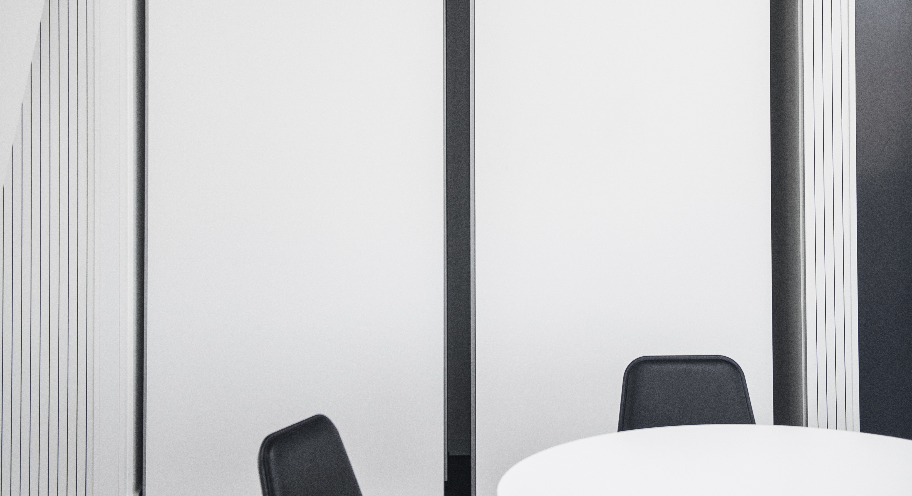
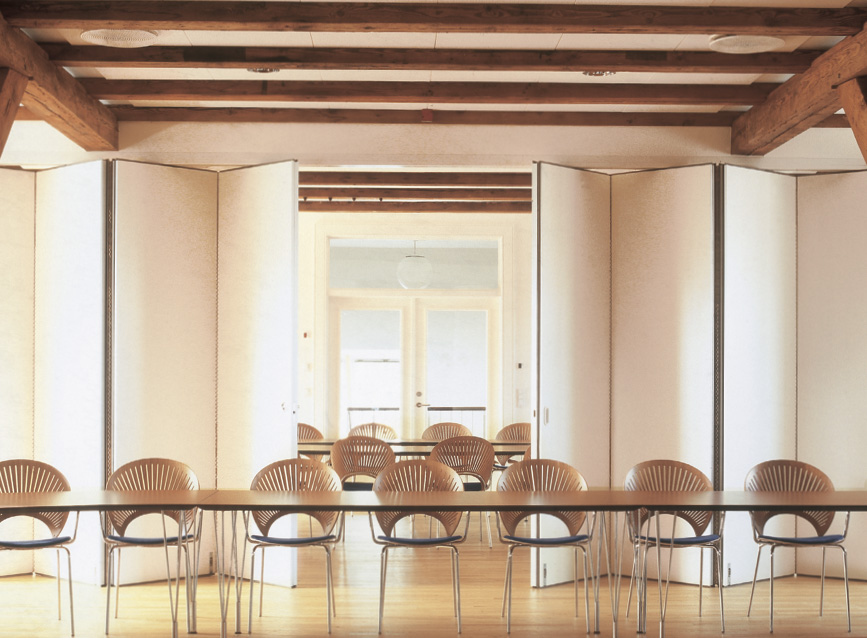
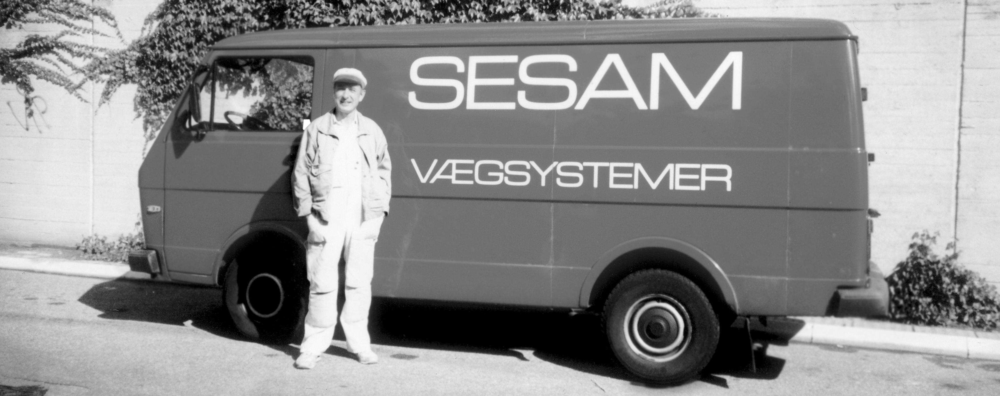

Sesam A/S
Glas - og Vægsystemer

Mere end 50 års erfaring indenfor væg- og glassystemer
Sesam har i mere end 50 år produceret og installeret vægsystemer til en lang række virksomheder i Danmark. Gennem tæt dialog og samarbejde med kunden skræddersyer vi den helt rigtige løsning. Kvalitet, service og fleksibilitet er nøglebegreber for den måde, vi driver forretning på. Hos Sesam er der kort fra idé til beslutning, og da tid er en vigtig faktor i dagens Danmark, har vi gearet organisationen til at agere hurtigt. Vores fornemste opgave er, at gøre det nemt for kunden. Med vores fleksible produktportefølge, høje kvalitet og produktviden, forsøger vi at leve op til dette hver dag vi går på arbejde.

Vi tilbyder
- 50 års erfaring
- Kvalitet og fleksibilitet
- Skræddersyede løsninger
- Bæredygtighed i fokus
